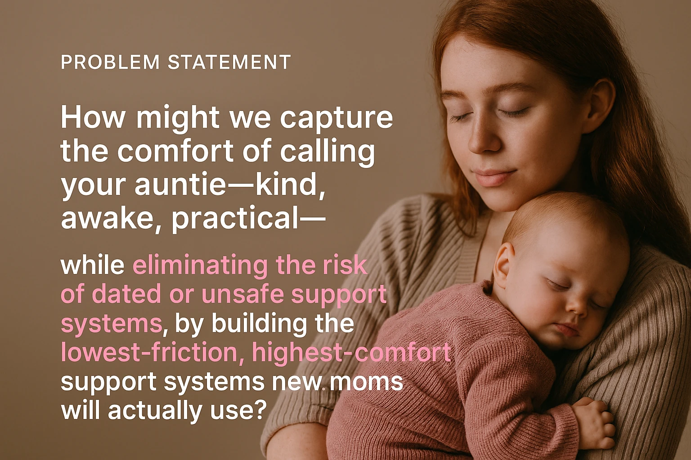

It is three in the morning and the phone is at four percent.
Every product built for new parents assumes a spare hand and a spare mind. At 3 a.m. there is neither.
Postpartum depression and anxiety reach roughly one in seven mothers. About half of those cases are never detected, because the people living inside them are too tired, too ashamed, or too busy being told they should feel lucky. The window is also longer than anyone plans for. Around 7.2% are still symptomatic nine to ten months out, and more than half of those had no symptoms at all earlier on.

So the need was never the question. The delivery was. Every serious attempt at this problem is an app, and an app asks a parent to download something, invent a password, answer twenty questions about her mood, and then come back daily to log how she is doing. That is homework. Handing homework to somebody running on four broken hours of sleep is not support. It is one more thing to fail at.

That idea took about nine minutes. The other thirty five hours and fifty one minutes went on finding out what it costs.